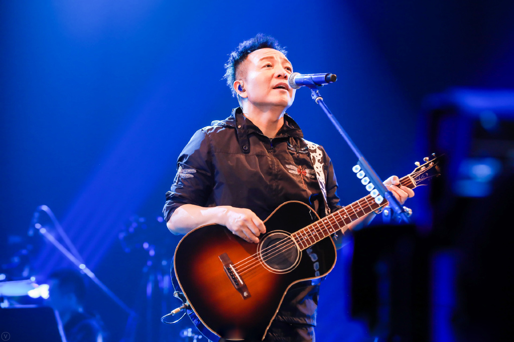

- 个人简介
- 重要事件
- 成就和荣誉
- 主要作品
- 生活照
- 生平
许巍
原名许玮，生于中国陕西西安，中国音乐人
重要事件
- 1997年4月，许巍发布首张个人专辑《在别处》
- 2000年11月，第二张专辑《那一年》发行
- 2004年，发布第四张个人专辑《每一刻都是崭新的》
-
2005年8月13日许巍在北京工人体育馆举办了个人首场演唱会《留声十年绝版青春》
成就和荣誉
- 2004年，获最佳男歌手
- 2004年，获最佳创作歌手(内地)
- 2006年，作品《旅行》获年度最佳歌曲
- 2006年，获内地最佳男歌手
- 2015年，获第19届最佳男歌手(内地)
主要作品
| 年份 |
专辑 |
| 1997年4月 |
《在别处》 |
| 2000年11月 |
《那一年》 |
| 2002年12月 |
《时光·漫步》 |
| 2004年12月 |
《每一刻都是崭新的》 |
| 2006年2月 |
《在路上》 |
| 2008年10月 |
《爱如少年》 |
| 2012年12月 |
《此时此刻》 |
| 2018年12月 |
《无尽光芒》 |
生活照

生平
1998年，许巍结婚，妻子是其参军时期的战友。许巍坦言自己很多的创作灵感来自于他和妻子之间的感情，其第二张专辑《那一年》中的《故乡》和《温暖》两首歌都是写给妻子的